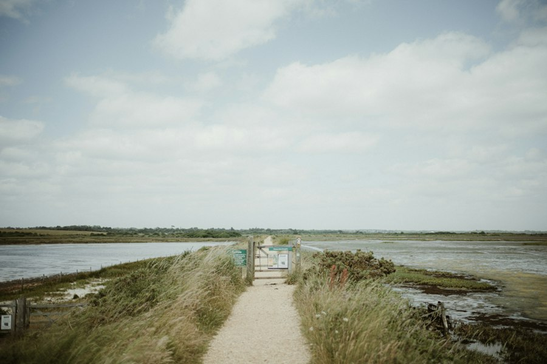
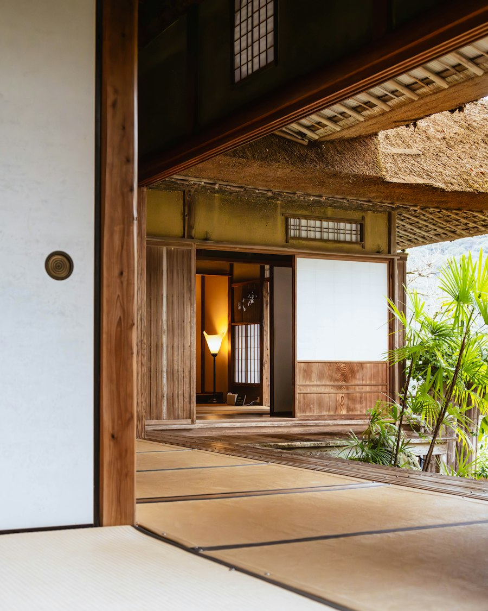

Una habilidad Aprende con situaciones cotidianas y prueba una forma de responder. Puedes empezar desde donde estás.
01 Observar Notar tu atención, una emoción o lo que está pasando. 02 Tomar perspectiva Relacionarte con tus pensamientos y cómo te hablas. 03 Elegir cómo actuar Cuidar lo que importa con un paso posible.
Probar la primera práctica Ver todas las prácticas
A tu ritmo · Puedes pasar o parar
Creado por Andrés Zuluaga , psicólogo clínico.
Elige desde donde estás
¿Qué quieres practicar? Observar Tomar perspectiva Elegir cómo actuar
Volver al inicio
Antes de empezar
Qué haremos
Por qué
Para qué Primero verás un ejemplo. Después podrás probarlo con tres preguntas y una situación breve.
Ver un ejemplo Elegir otra práctica
Puedes pasar cualquier paso · Sin escribir respuestas
Un ejemplo cotidiano
Ahora lo pruebo yo Pausar
Piensa tu respuesta. Si te ayuda, represéntala con una foto.

Foto 1 
Foto 2 Foto 3 Continuar sin foto Anterior Pausar Pasar pregunta
Tu asociación es personal.
Puedes responder con palabras o imaginar otra imagen.
Prueba ahora
Continuar a mi ritmo Volver a la pregunta
Origen de la fotografía
Ensaya con un caso · Opcional
Pasar este caso Pausar
Una clave para este ejemplo
El caso explica una habilidad; tus experiencias personales no se califican.
Llevarlo a mi día Volver al caso
Sin prisa
Puedes tomarte un momento. Mira a tu alrededor. La práctica puede esperar.
Retomar mi pausa Terminar por ahora De la práctica a tu día
Un paso que puedas probar.
Otra práctica sugerida Elegir otra práctica
Repetir esta práctica Terminar por ahora
Un mensaje para Andrés Zuluaga · Opcional Siéntete libre de escribirle a Andrés Zuluaga, creador de este ecosistema virtual y director de INSIDE.
Tu mensaje
Se abre tu aplicación de correo con lo que escribas aquí. Tú revisas y envías. INSIDE no guarda este mensaje ni añade tus respuestas del ejercicio. El borrador se borra al salir de esta práctica.
Si no se abre tu correo, puedes copiar el texto y escribir a inside.ecosistema@gmail.com .
Consultar acompañamiento con Andrés Hasta tu próxima pausa
Puedes volver cuando quieras. Una pregunta puede acompañarte sin que tengas que resolverla ahora.
Volver al inicio